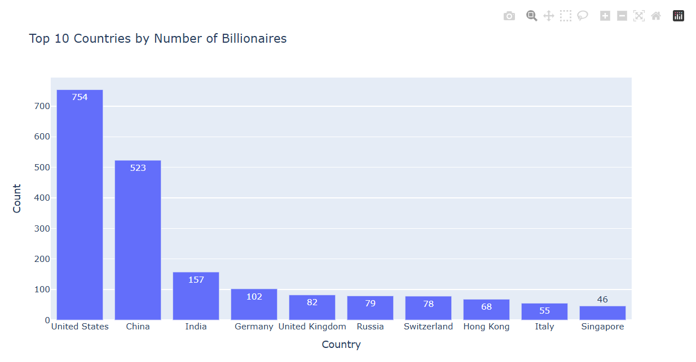

Interactive Data Visualization with Plotly
Developed an interactive data visualization project using Plotly to transform complex datasets into intuitive and dynamic visual insights. Designed user-friendly dashboards that allow users to explore patterns, trends, and relationships in real time.
More details
Problem
Traditional static visualizations often fail to effectively communicate complex patterns in data, especially to non-technical audiences. There was a need for an interactive solution that allows users to explore data dynamically and uncover insights without requiring advanced technical knowledge.
Approach
Cleaned and processed the dataset using pandas, followed by designing multiple interactive visualizations using Plotly. Implemented features such as hover interactions, filtering, and dynamic views to enhance user engagement. Structured the project as a reproducible Jupyter Notebook and prepared it for public sharing via GitHub.
Results & Impact
Successfully created an interactive visualization tool that makes data exploration more accessible and engaging. Users can identify trends and relationships more efficiently compared to static charts. This project demonstrates the ability to communicate complex data insights through intuitive and visually appealing interfaces.